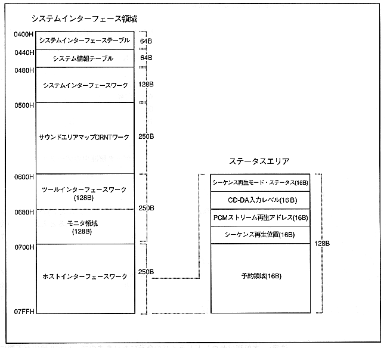

Return to previous page ｜ Return to menu ｜ Go to next page
4.3 Status area
When the sound control command is executed, the current status and necessary information are returned to the main system as a return status. The return status is stored in the status area of the system area. Refer to it if necessary.

Return to previous page ｜ Return to menu ｜ Go to next page